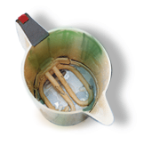
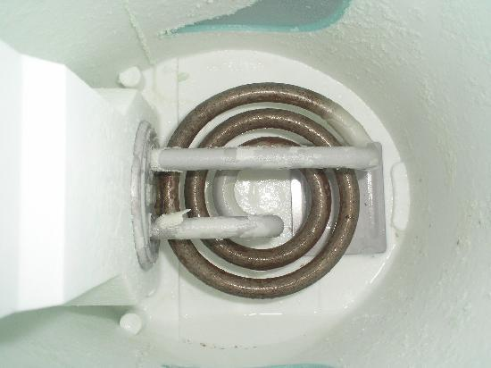
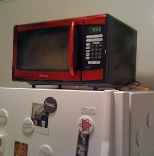
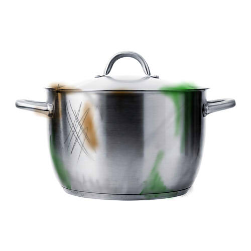
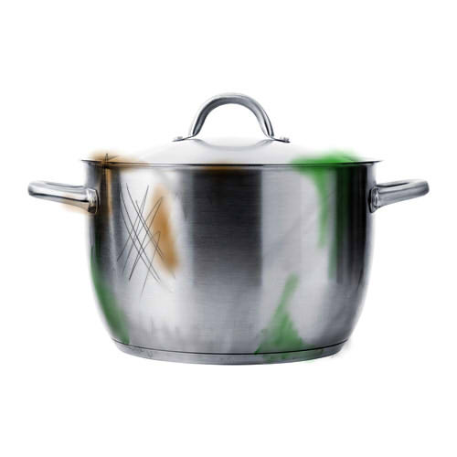

Kettle's Story
Kettle was bought by his family after their wedding in the late 90's. He lived a peaceful life, boiling water, bubbling away without a care in the world. He was admired by all the other appliances for his carefree attitude. He was proud of his shiny plastic body and believed he would never wear. Throughout his early life, Kettle was cleaned regularly. As he grew older, Kettle was cleaned less and less. In the mid-2000's, Kettle noticed that Toaster was looking at him differently. One day he decided to talk to her and he found that he was attracted to her. They began flirting and their relationship blossomed. He proposed to Toaster in late 2006 and in 2007, they were married by Sandwich Maker. They were very happy together, but by now, Kettle was no longer being cleaned. He soon gathered limescale and no longer worked as well. Toaster soon became disenchanted with Kettle and began to cheat on him with bread. When Kettle found out, he was steaming. He confronted Toaster, who denied the affair, but she was betrayed by her crumb tray. The two parted ways and Kettle left the kitchen. None of the other appliances know where he is now. Many believe he's at the bottom of a landfill somewhere, rotting.
 
"Their treatment of me and the others brought me to boiling point."

 
